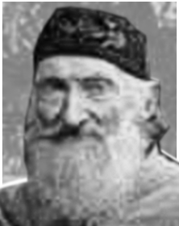
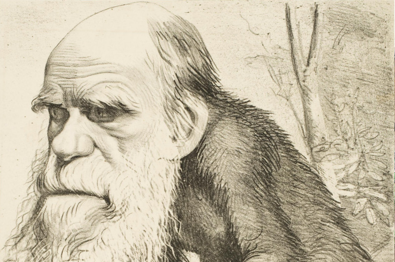

|
|
About us | Contacts | Privacy policy |
When we look to the individuals of the same variety or sub-variety of our older cultivated plants and animals, one of the first points which strikes us, is, that they generally differ much more from each other, than do the individuals of any one species or variety in a state of nature. When we reflect on the vast diversity of the plants and animals which have been cultivated, and which have varied during all ages under the most different climates and treatment, I think we are driven to conclude that this greater variability is simply due to our domestic productions having been raised under conditions of life not so uniform as, and somewhat different from, those to which the parent-species have been exposed under nature. There is, also, I think, some probability in the view propounded by Andrew Knight, that this variability may be partly connected with excess of food. It seems pretty clear that organic beings must be exposed during several generations to the new conditions of life to cause any appreciable amount of variation; and that when the organisation has once begun to vary, it generally continues to vary for many generations. No case is on record of a variable being ceasing to be variable under cultivation. Our oldest cultivated plants, such as wheat, still often yield new varieties: our oldest domesticated animals are still capable of rapid improvement or modification.
t has been disputed at what period of life the causes of variability, whatever they may be, generally act; whether during the early or late period of development of the embryo, or at the instant of conception. Geoffroy St. Hilaire's experiments show that unnatural treatment of the embryo causes monstrosities; and monstrosities cannot be separated by any clear line of distinction from mere variations. But I am strongly inclined to suspect that the most frequent cause of variability may be attributed to the male and female reproductive elements having been affected prior to the act of conception.
Several reasons make me believe in this; but the chief one is the remarkable effect which confinement or cultivation has on the functions of the reproductive system; this system appearing to be far more susceptible than any other part of the organisation, to the action of any change in the conditions of life. Nothing is more easy than to tame an animal, and few things more difficult than to get it to breed freely under confinement, even in the many cases when the male and female unite. How many animals there are which will not breed, though living long under not very close confinement in their native country! This is generally attributed to vitiated instincts; but how many cultivated plants display the utmost vigour, and yet rarely or never seed!
In some few such cases it has been found out that very trifling changes, such as a little more or less water at some particular period of growth, will determine whether or not the plant sets a seed. I cannot here enter on the copious details which I have collected on this curious subject; but to show how singular the laws are which determine the reproduction of animals under confinement, I may just mention that carnivorous animals, even from the tropics, breed in this country pretty freely under confinement, with the exception of the plantigrades or bear family; whereas, carnivorous birds, with the rarest exceptions, hardly ever lay fertile eggs. Many exotic plants have pollen utterly worthless, in the same exact condition as in the most sterile hybrids. When, on the one hand, we see domesticated animals and plants, though often weak and sickly, yet breeding quite freely under confinement; and when, on the other hand, we see individuals, though taken young from a state of nature, perfectly tamed, long-lived, and healthy (of which I could give numerous instances), yet having their reproductive system so seriously affected by unperceived causes as to fail in acting, we need not be surprised at this system, when it does act under confinement, acting not quite regularly, and producing offspring not perfectly like their parents or variable.
Sterility has been said to be the bane of horticulture; but on this view we owe variability to the same cause which produces sterility; and variability is the source of all the choicest productions of the garden. I may add, that as some organisms will breed most freely under the most unnatural conditions (for instance, the rabbit and ferret kept in hutches), showing that their reproductive system has not been thus affected; so will some animals and plants withstand domestication or cultivation, and vary very slightly—perhaps hardly more than in a state of nature.
A long list could easily be given of "sporting plants;" by this term gardeners mean a single bud or offset, which suddenly assumes a new and sometimes very different character from that of the rest of the plant. Such buds can be propagated by grafting, &c., and sometimes by seed. These "sports" are extremely rare under nature, but far from rare under cultivation; and in this case we see that the treatment of the parent has affected a bud or offset, and not the ovules or pollen. But it is the opinion of most physiologists that there is no essential difference between a bud and an ovule in their earliest stages of formation; so that, in fact, "sports" support my view, that variability may be largely attributed to the ovules or pollen, or to both, having been affected by the treatment of the parent prior to the act of conception. These cases anyhow show that variation is not necessarily connected, as some authors have supposed, with the act of generation.
|  |
Fritz Müller One of the first supporters of Darwin's theory |
Seedlings from the same fruit, and the young of the same litter, sometimes differ considerably from each other, though both the young and the parents, as Müller has remarked, have apparently been exposed to exactly the same conditions of life; and this shows how unimportant the direct effects of the conditions of life are in comparison with the laws of reproduction, and of growth, and of inheritance; for had the action of the conditions been direct, if any of the young had varied, all would probably have varied in the same manner. To judge how much, in the case of any variation, we should attribute to the direct action of heat, moisture, light, food, &c., is most difficult: my impression is, that with animals such agencies have produced very little direct effect, though apparently more in the case of plants. Under this point of view, Mr. Buckman's recent experiments on plants seem extremely valuable. When all or nearly all the individuals exposed to certain conditions are affected in the same way, the change at first appears to be directly due to such conditions; but in some cases it can be shown that quite opposite conditions produce similar changes of structure. Nevertheless some slight amount of change may, I think, be attributed to the direct action of the conditions of life—as, in some cases, increased size from amount of food, colour from particular kinds of food and from light, and perhaps the thickness of fur from climate.  There are a lot of satiric drawings about Charles Darwin: his idea that men come from apes wasn't accepted by the general public. Habit also has a decided influence, as in the period of flowering with plants when transported from one climate to another. In animals it has a more marked effect; for instance, I find in the domestic duck that the bones of the wing weigh less and the bones of the leg more, in proportion to the whole skeleton, than do the same bones in the wild-duck; and I presume that this change may be safely attributed to the domestic duck flying much less, and walking more, than its wild parent. The great and inherited development of the udders in cows and goats in countries where they are habitually milked, in comparison with the state of these organs in other countries, is another instance of the effect of use. Not a single domestic animal can be named which has not in some country drooping ears; and the view suggested by some authors, that the drooping is due to the disuse of the muscles of the ear, from the animals not being much alarmed by danger, seems probable. There are many laws regulating variation, some few of which can be dimly seen, and will be hereafter briefly mentioned. I will here only allude to what may be called correlation of growth. Any change in the embryo or larva will almost certainly entail changes in the mature animal. In monstrosities, the correlations between quite distinct parts are very curious; and many instances are given in Isidore Geoffroy St. Hilaire's great work on this subject. Breeders believe that long limbs are almost always accompanied by an elongated head. Some instances of correlation are quite whimsical: thus cats with blue eyes are invariably deaf; colour and constitutional peculiarities go together, of which many remarkable cases could be given amongst animals and plants. From the facts collected by Heusinger, it appears that white sheep and pigs are differently affected from coloured individuals by certain vegetable poisons. Hairless dogs have imperfect teeth; long-haired and coarse-haired animals are apt to have, as is asserted, long or many horns; pigeons with feathered feet have skin between their outer toes; pigeons with short beaks have small feet, and those with long beaks large feet. Hence, if man goes on selecting, and thus augmenting, any peculiarity, he will almost certainly unconsciously modify other parts of the structure, owing to the mysterious laws of the correlation of growth.
The result of the various, quite unknown, or dimly seen laws of variation is infinitely complex and diversified. It is well worth while carefully to study the several treatises published on some of our old cultivated plants, as on the hyacinth, potato, even the dahlia, &c.; and it is really surprising to note the endless points in structure and constitution in which the varieties and sub-varieties differ slightly from each other. The whole organisation seems to have become plastic, and tends to depart in some small degree from that of the parental type.
Any variation which is not inherited is unimportant for us. But the number and diversity of inheritable deviations of structure, both those of slight and those of considerable physiological importance, is endless. Dr. Prosper Lucas's treatise, in two large volumes, is the fullest and the best on this subject. No breeder doubts how strong is the tendency to inheritance: like produces like is his fundamental belief: doubts have been thrown on this principle by theoretical writers alone.
When a deviation appears not unfrequently, and we see it in the father and child, we cannot tell whether it may not be due to the same original cause acting on both; but when amongst individuals, apparently exposed to the same conditions, any very rare deviation, due to some extraordinary combination of circumstances, appears in the parent — say, once amongst several million individuals — and it reappears in the child, the mere doctrine of chances almost compels us to attribute its reappearance to inheritance. Every one must have heard of cases of albinism, prickly skin, hairy bodies, &c., appearing in several members of the same family. If strange and rare deviations of structure are truly inherited, less strange and commoner deviations may be freely admitted to be inheritable. Perhaps the correct way of viewing the whole subject, would be, to look at the inheritance of every character whatever as the rule, and non-inheritance as the anomaly.
The laws governing inheritance are quite unknown; no one can say why the same peculiarity in different individuals of the same species, and in individuals of different species, is sometimes inherited and sometimes not so; why the child often reverts in certain characters to its grandfather or grandmother or other much more remote ancestor; why a peculiarity is often transmitted from one sex to both sexes, or to one sex alone, more commonly but not exclusively to the like sex.
It is a fact of some little importance to us, that peculiarities appearing in the males of our domestic breeds are often transmitted either exclusively, or in a much greater degree, to males alone. A much more important rule, which I think may be trusted, is that, at whatever period of life a peculiarity first appears, it tends to appear in the offspring at a corresponding age, though sometimes earlier. In many cases this could not be otherwise: thus the inherited peculiarities in the horns of cattle could appear only in the offspring when nearly mature; peculiarities in the silkworm are known to appear at the corresponding caterpillar or cocoon stage. But hereditary diseases and some other facts make me believe that the rule has a wider extension, and that when there is no apparent reason why a peculiarity should appear at any particular age, yet that it does tend to appear in the offspring at the same period at which it first appeared in the parent. I believe this rule to be of the highest importance in explaining the laws of embryology. These remarks are of course confined to the first appearance of the peculiarity, and not to its primary cause, which may have acted on the ovules or male element; in nearly the same manner as in the crossed offspring from a short-horned cow by a long-horned bull, the greater length of horn, though appearing late in life, is clearly due to the male element.
The following plot has nothing to do with the article: it's just a test for SVG graphics.
Having alluded to the subject of reversion, I may here refer to a statement often made by naturalists— namely, that our domestic varieties, when run wild, gradually but certainly revert in character to their aboriginal stocks. Hence it has been argued that no deductions can be drawn from domestic races to species in a state of nature. I have in vain endeavoured to discover on what decisive facts the above statement has so often and so boldly been made. There would be great difficulty in proving its truth: we may safely conclude that very many of the most strongly-marked domestic varieties could not possibly live in a wild state. In many cases we do not know what the aboriginal stock was, and so could not tell whether or not nearly perfect reversion had ensued. It would be quite necessary, in order to prevent the effects of intercrossing, that only a single variety should be turned loose in its new home. Nevertheless, as our varieties certainly do occasionally revert in some of their characters to ancestral forms, it seems to me not improbable, that if we could succeed in naturalising, or were to cultivate, during many generations, the several races, for instance, of the cabbage, in very poor soil (in which case, however, some effect would have to be attributed to the direct action of the poor soil), that they would to a large extent, or even wholly, revert to the wild aboriginal stock. Whether or not the experiment would succeed, is not of great importance for our line of argument; for by the experiment itself the conditions of life are changed.
If it could be shown that our domestic varieties manifested a strong tendency to reversion, — that is, to lose their acquired characters, whilst kept under unchanged conditions, and whilst kept in a considerable body, so that free intercrossing might check, by blending together, any slight deviations of structure, in such case, I grant that we could deduce nothing from domestic varieties in regard to species. But there is not a shadow of evidence in favour of this view: to assert that we could not breed our cart and race-horses, long and short-horned cattle, and poultry of various breeds, and esculent vegetables, for an almost infinite number of generations, would be opposed to all experience. I may add, that when under nature the conditions of life do change, variations and reversions of character probably do occur; but natural selection, as will hereafter be explained, will determine how far the new characters thus arising shall be preserved.